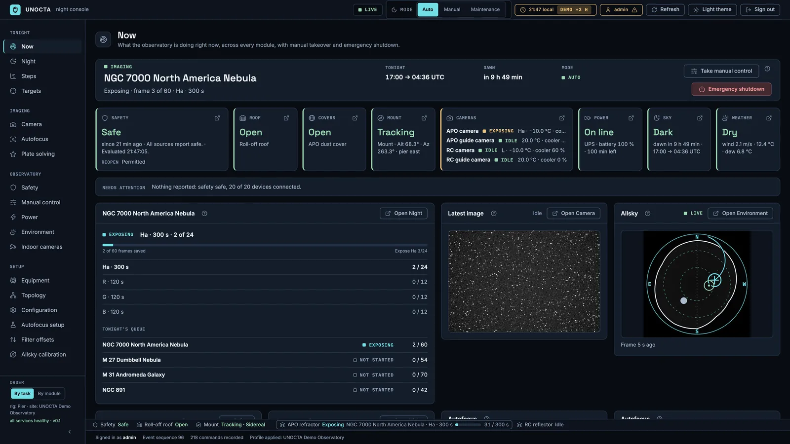
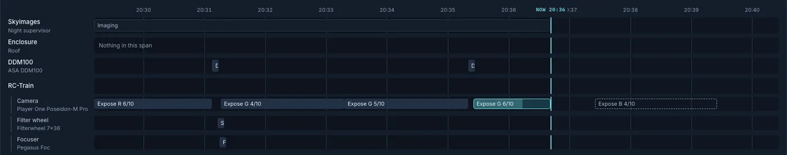
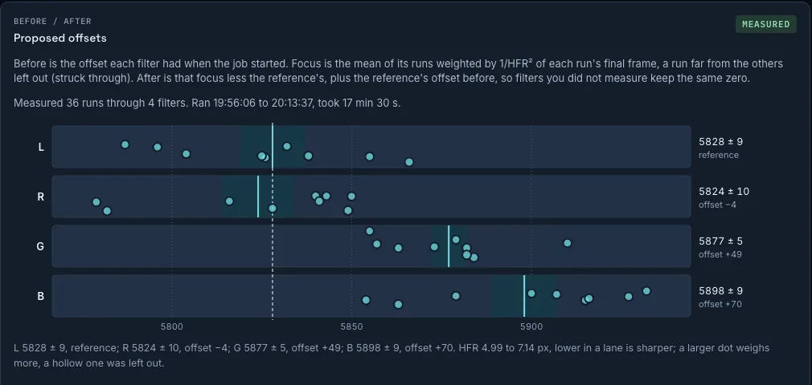
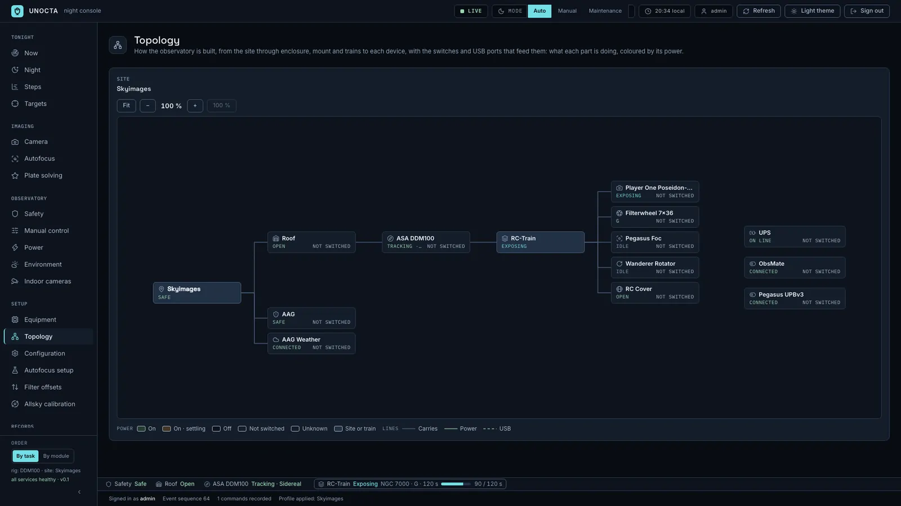

Unattended Night Observatory Controller · Train Automation
Keeping watch over the sky, through the night.
UNOCTA opens at dusk, images through the night, protects the equipment, recovers from failures and closes at dawn. A person is an optional observer, never a required participant.

NowWhat the observatory is doing right now, across every module, with manual takeover and emergency shutdown. A live console, 22 October 2026.
Tonight
Three pages answer what the observatory is doing, why it chose it, and what comes next.
Night: the plan over the dark hours
The Orchestrator estimates the queue from each train's measured overheads and lays it on the dark window with sunset, dusk, moonset and dawn. It says plainly what goes on to the next night. Reorder, pause, abort, add to tonight.

NightTonight's plan. Click for the full page.
Steps: every step on every lane
The site, the mount and each train's camera, filter wheel and focuser on their own lanes. Done, running, planned and failed, each with the time it took. Zoom to the minute or show the whole night; skip the steps that may be skipped.
- Planned steps are dashed where their time follows from exposure lengths or a trigger.
- What runs now, how far it has got, and what comes next, in one line at the top.

StepsThe timeline zoomed to the last ten minutes. Click for the full page.
Targets: frame it on the sky
A stored target carries its centre, its position angle and the train it is framed for. The sky view draws every train's field over DSS imagery: drag the frame, turn the angle, and see the altitude, darkness and Moon for tonight beside it.
- Look up a name on SIMBAD, or paste a coordinate pair into either field.
- Runs per target: frames per filter, exposure, cooling, dither, refocus and recentre rules.
TargetsRecorded on the live console: NGC 7000 opened, framed on the sky for the RC train, the angle turned, the centre dragged.
Imaging
Focus and solving explain what they measured, so a bad night can be read in the morning.
Autofocus that explains itself
A slope model learned from past runs focuses from a few frames on one wing; a V-curve scan when no model is ready or the frames do not fit. Every frame is measured over the same Gaia stars, and the stars set aside are named: beside a catalogue neighbour, saturated, cut by the edge.

AutofocusA slope run. Click for the full page with the star measurements.
Solving, on every frame
Each run frame, autofocus frame and centring is solved against the local Gaia catalogue, with pointing error, rotation, scale and time in a running table. Solve now from the console and sync the mount if you want. The catalogue can be downloaded ahead to a magnitude, so a field not yet seen is ready offline.

Plate solvingRecent solves. Click for the full page.
Camera: the last frame, honestly
The last frame of each camera, screen-stretched at exact binary zoom, with its histogram, clipping display, star overlay and statistics: HFR, FWHM, eccentricity, background. The solve result sits in the frame's header line.

CameraA run frame, solved. Click for the full page.
Safety is fail-closed
Core decides. Unknown, stale or contradictory input is unsafe. Nothing above Core, not the planner, not the console, not a notification, can override a limit, and Core keeps protecting the hardware when all of them are gone.
One decision, with its sources and its rules
Every safety source is counted or advisory, with a max age and a debounce. The unsafe response is a fixed ladder. Reopening waits until it has been safe for a while, closures per night are limited, and a lockout is shown, never silent. Dry-run any source to see the decision and the commands it would refuse.

SafetyCore's decision, the sources behind it, the response it is armed with. Click for the full page.
UPS as a safety source, reserve as a budget
The UPS joins the safety sources, and its runtime is checked against a budget measured from real power-down sequences, margin included. On battery: stop new exposures, park and close, warm and power off the cameras if the runtime covers it, request the host shutdown. Each device's outlet and USB port is known, so recovery can power-cycle the one that hung.

PowerUPS, reserve budget and outlets. Click for the full page.
Horizon, obstructions and mechanical limits
A measured horizon with an enforced margin, each mount's altitude and meridian limits and the margin it has now. Check any target against the site and a mount before it is queued. Core warns ahead and acts at the limit.

EnvironmentThe sky with the horizon and the mount inside its limits. Click for the full page.
Built for a real observatory
Permanent, robotic, remote. Commissioned once, expected to hold its state for months, with nobody within reach of the roof.
Two trains on one mount, or more
A rig is a mount with the trains it carries. Trains share slews, dithers and meridian flips through barriers and fail on their own: one train's hung driver does not end the other's night. Topology draws the site through enclosure, mount, trains and devices, with the switch channels and USB ports that feed each, coloured by power.
- Automation addresses a site, rig or train role; only Core resolves it to a device or a channel.
- Every device class has its own adapter per backend. A capability a device lacks is reported, never guessed.

TopologyThe demo observatory profile: an APO refractor and an RC reflector on one mount. Click for the full page.
Allsky, calibrated to the sky
Any allsky camera that serves an image. Core polls it, lays the sky chart over the frame and shows the latest one on Now. Calibrate by clicking three stars you recognise; Core fits the zenith, the horizon radius and north, plain or mirrored, and writes it into the profile.

Allsky calibrationThe latest frame, ready for star clicks. Click for the full page.
The whole observatory in one profile
Site, OTAs, devices, trains and rigs, roles, filters, rotator limits, cooling, switch channels, power and USB bindings, power sequencing, UPS, safety rules, environment, allsky, indoor cameras, night, device actions, rig policies, camera settings, paths, plate solving (with binning, gain and offset), notifications. Validate, then apply. A rule that is off is a visible choice, not a silent gap.

ConfigurationSafety rules. Click for the full page.

A phone that hears the night
One Pushover channel, off until you switch it on. Four tiers (critical, intervention, warning, info), each mapped to a Pushover priority or off. Unsafe, a safe state and an open escalation reach the phone; a message never carries an id. A test button, the last deliveries, and a bounded queue. A night completes whether or not anyone reads a message.

Motors on, motors off
Record a driver's own actions, such as a mount's MotorOn and MotorOff, with their parameters, and name one as the device's enable action. Core sends it before a park or unpark, under its own hold, and logs a device.enable event. Manual control runs any listed action with the same audit trail.

Moments in the night
Attach actions to moments: motors on at night start, an autofocus after the meridian flip, motors off at night end. Each step says whether it may fail, so a step that does not matter cannot stop the night and one that does, will.

Trains & rigs
One OTA, its instruments, the cover and panel that serve it; the rig that carries them and the mount that owns them.

Devices
Discover Alpaca, list ASCOM drivers, add by hand. Class, backend, address and the connection state Core confirmed.

UPS & battery saving
The UPS as a safety source, its budget runs, and what is powered off next when it goes on battery.
Four questions, answered
The console is a window onto the system, not its authority. It exists to answer these.
What is the observatory doing?
Every module's state on one page, with a state word next to a marker, never colour alone. Manual takeover and emergency shutdown beside it.
Why this target, this action?
The plan says why a run is where it is, what spills over, and which constraint moved it.
What if this fails?
Retry, recover, degrade, defer, safe state. The ladder is armed and shown before anything turns unsafe.
What happened while nobody watched?
Every command with its outcome and reason, every access decision, every event. Durable, live, searchable.
And the rest of the console
Dense, one fact per page, built for an astronomer at 03:00 on a large screen. Dark and light themes.

Manual control
The same Core API, device holds, limits and audit trail as automation. Auto, Manual or Maintenance, recorded with who changed it.

Logbook
Commands and their outcomes, access decisions and domain events, filtered by status, scope, actor and time.

Filter offsets
A few autofocus runs per filter, each weighted by its HFR, become the offsets written into the profile.

Topology, live
The same page on the live observatory while it exposes: what each part is doing, coloured by its power.